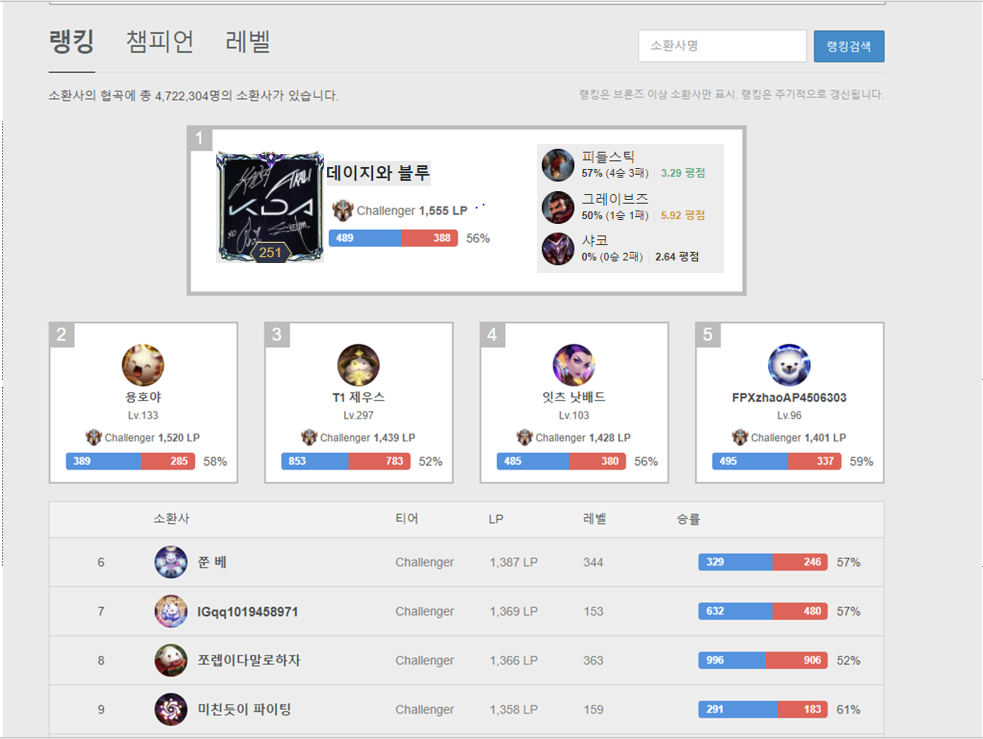
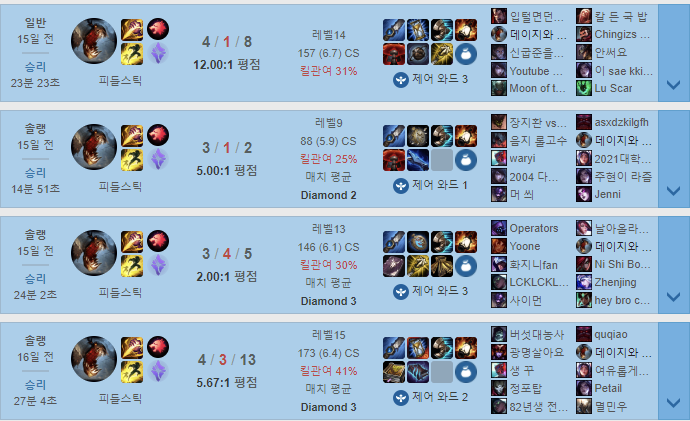
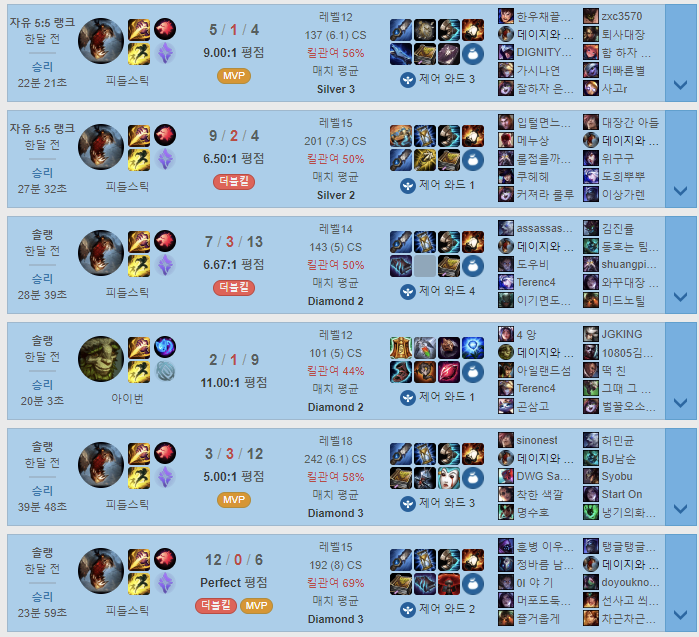

“데이지와 블루“, 본명은 고영욱. 그는 현재 한국서버에서 놀라운 기량을 보여주며 현재 랭킹 1위를 달리고 있는 플레이어다.
그의 라인은 많은 유저들에게 백정이라고 핍박받는 ‘정글‘이다.
지금까지 정글 유저가 랭킹 1위를 찍는 경우는 매우 드물었다. 대부분은 미드 or 탑이 높은 랭킹 1위 타이틀을 터득하는 상황에서, 그는 당당하게 정글로만 1위를 달성했다.
그의 주 챔프는 피들스틱과 참나무이다. 닉네임에서 데이지는 참나무챔프의 일종의 스킬이여서, 많은 사람들이 참나무만 하는 유저로 착각을 하곤 한다.
하지만 아이러니하게도 그는 피들스틱의 정점이라는 타이틀을 보유하고 있으며, 많은 프로 및 스트리머들도 그가 참나무는 잘 모르지만, 피들스틱은 가장 잘 다룬다고 평가한다.
 